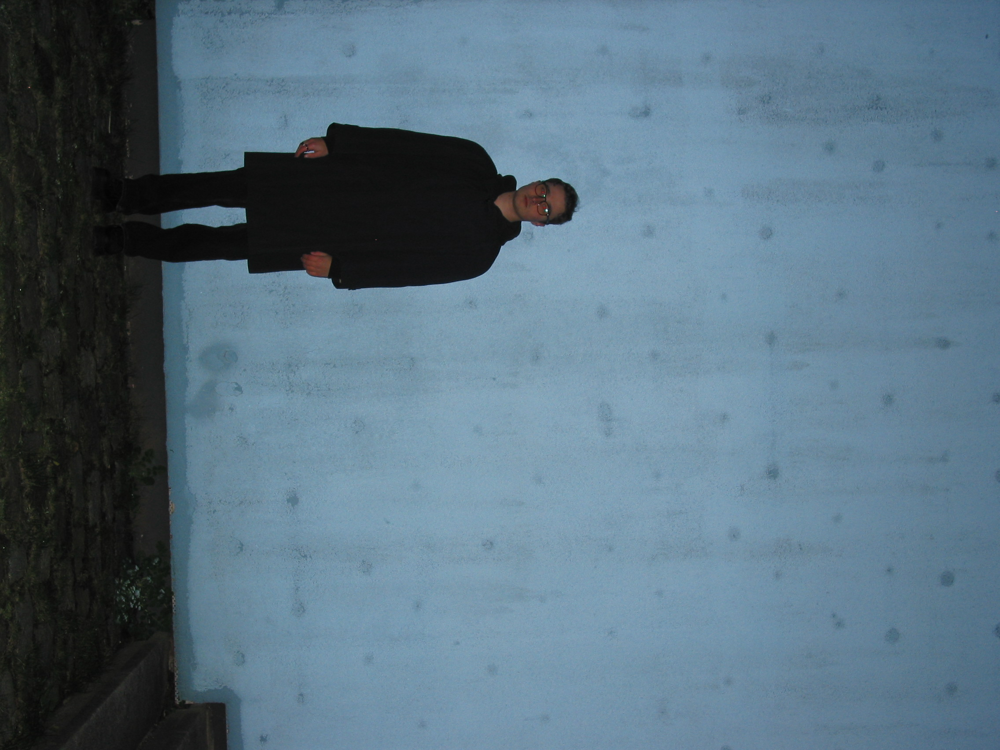

Name: Ma Be
Age: 24 years old
Location: Hamburg, Germany / Campervan
contact:
Instagram: @m.a..
Email: mma@...
group exhibitions:
[2023] 44309//GALLERY Dortmund - f2 Fotofestival
[2023] "Spekulativ" Gallery FH-Dortmund
[2018] Hamburg Deichtorhallen

Someone who views life as a mystery is driven by curiosity and a deep urge to explore. They are drawn by a deep longing for what could lie beyond - as if the answers lie in the space between the outer world and the depths of their own mind.
A seeker will always seek, knowing this search will probably never truly end. Yet this journey is the point of it all.
Photography has become my way of exploring.
Capturing my cosmos.